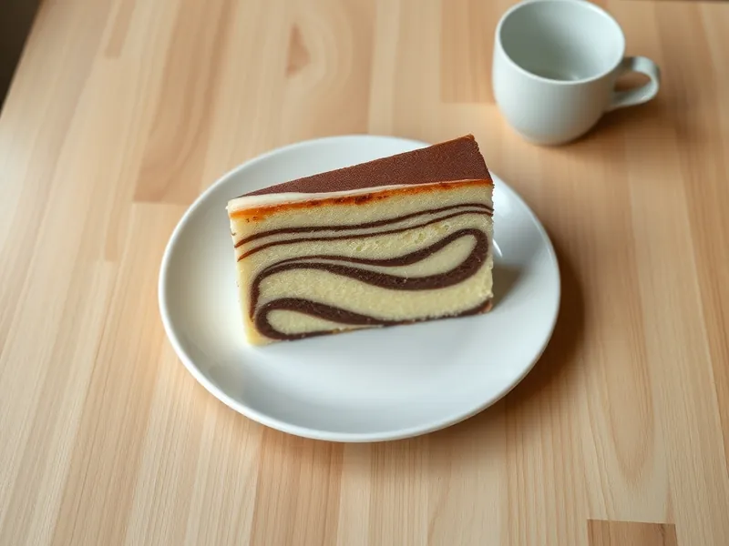

Пирог «Зебра» на сметане
Полосатый пирог из светлого и шоколадного теста на сметане
85 мин10 порц.343 ккал на порциюБ 7 · Ж 16 · У 42Русская кухня
Открыть в приложении: порции, таймеры, список покупок
Продукты на 10 порц.
- Яйцо куриное4 шт
- Сахар1 стак.
- Сметана 20%200 г
- Сливочное масло110 г
- Мука пшеничная280 г
- Разрыхлитель2 ч. л.
- Какао-порошок2 ст. л.
- Ванильный сахар1 шт
Как готовить
- Взбейте яйца с сахаром и ванильным сахаром миксером 5 минут до светлой пышной массы.
- Добавьте сметану и 100 г растопленного, слегка остывшего сливочного масла и перемешайте. Всыпьте муку с разрыхлителем и размешайте до гладкого теста.
- Разделите тесто пополам и в одну часть вмешайте какао.
- Разогрейте духовку до 180 °C (средний жар). Смажьте форму диаметром 24 см оставшимся маслом или застелите бумагой.
- Выкладывайте в центр формы по 2 ст. л. теста, чередуя светлое и тёмное, каждую порцию строго в центр предыдущей: тесто само растечётся кругами.
- Выпекайте 50-55 минут, пока шпажка в центре не выйдет сухой. Первые 30 минут духовку не открывайте.
- Остудите в форме 15 минут, затем переложите на решётку.
Совет. Светлое и тёмное тесто должны быть одинаковой густоты, иначе полоски не получатся: если тёмное гуще, добавьте в него 1 ст. л. сметаны.